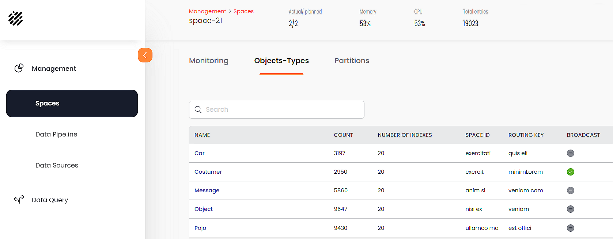
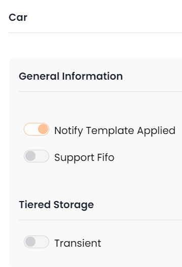
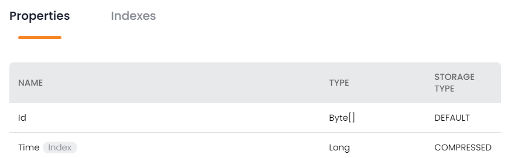
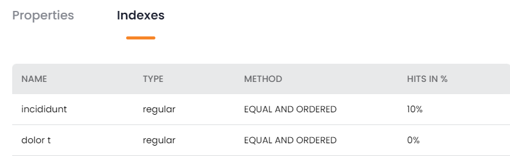
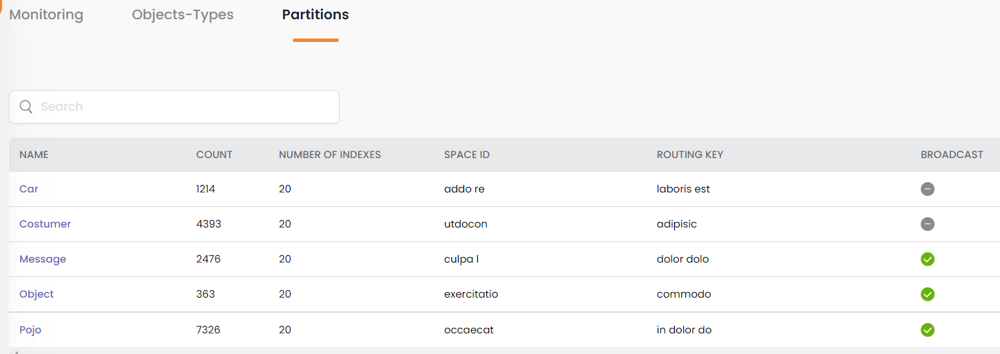

SpaceDeck – Spaces Status Details
Spaces Status Details
When viewing the Spaces Status screen, you can click on a Space name to see details about the Space:
The resulting screen has three tabs: Monitoring, Objects-Types and Partitions.
View Space Details – Monitoring
The Monitoring tab displays graphs showing various Space-related statistics.
Note that a dropdown list on the right side of the screen allows you to change the reported time interval:
The following graphs are available:
Ops/Sec Over Time
Memory Utilization

CPU Utilization
Partition Balance by Objects

Partition Balance by Memory Utilization
Tiered Storage:
Tiered Storage – Hits Per Tier
Tiered Storage – Five Objects with Biggest Distance From Expected
Redo Log – Redo Log Size
Redo Log – Redo Log Utilization

Redo Log – CPU Utilization
View Space Details – Objects-Types
The Objects-Types tab displays a list of the object types (tables) associated with the Space.

View Space Details – Objects-Types Summary Information
Each row represents one object-type (table) in the Space. The object-type fields are as follows:
- Name — Name of the object-type
- Count — number of rows in the object-type
- Number of Indexes — number of indexes defined for the object-type
- Space ID — the GigaSpaces Space object that contains the object-type data
- Routing Key — The identifier that will be used by GigaSpaces to distribute the data among multiple partitions
Click on one of the object types to see detailed information for the object type's properties and indexes. The Object-Types information is divided into three categories: General information, Properties, and Indexes.
View Space Details – Objects-Types – General Information

General Information options:
- Notify Template Applied —Subscribe to Space events and provide a listener mechanism – see Notifications
- Support Fifo — Support FIFO (First In, First Out) behavior – see FIFO Support
Tiered Storage option:
- Transient – Data will be stored in Hot storage only – see Data Persistency in Tiered Storage
View Space Details – Objects-Types – Properties

- Name — Name of the property (field)
- Type — xxxxxxxxxxxxxx
- Storage Type — xxxxxxxxxxxxxxxxx
View Space Details – Objects-Types – Indexes

- Name — Name of the index
- Type — xxxxxxxxxxxxxx
- Method — xxxxxxxxxxxxxxxxx
- Hits in % — the GigaSpaces Space object that contains the object-type data
View Space Details – Partitions
The Partitions tab displays details about the partitions where the Space data is stored.

- Name — Object Type
- Count — xxxxxxxxxxxxxx
- Number of Indexes — xxxxxxxxxxxxxxxxx
- Space ID — xxxxxxxx
- Routing Key – xxxxxx
- Broadcast – xxxxxx
You can also click on the name of the Object Type (e.g. Car in this example) to view and modify the Object Type properties, as discussed above.